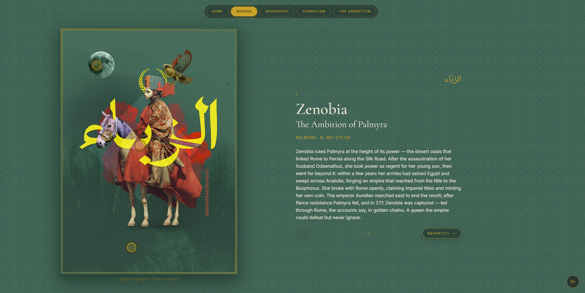
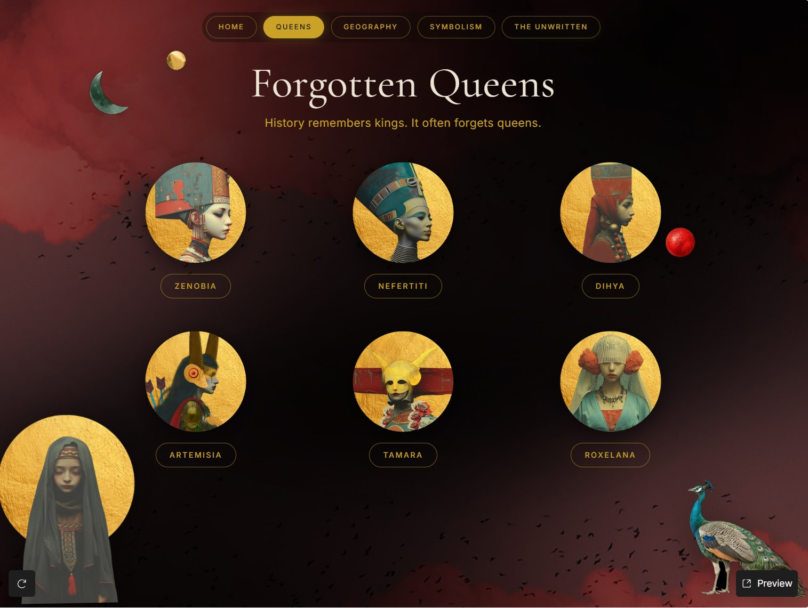
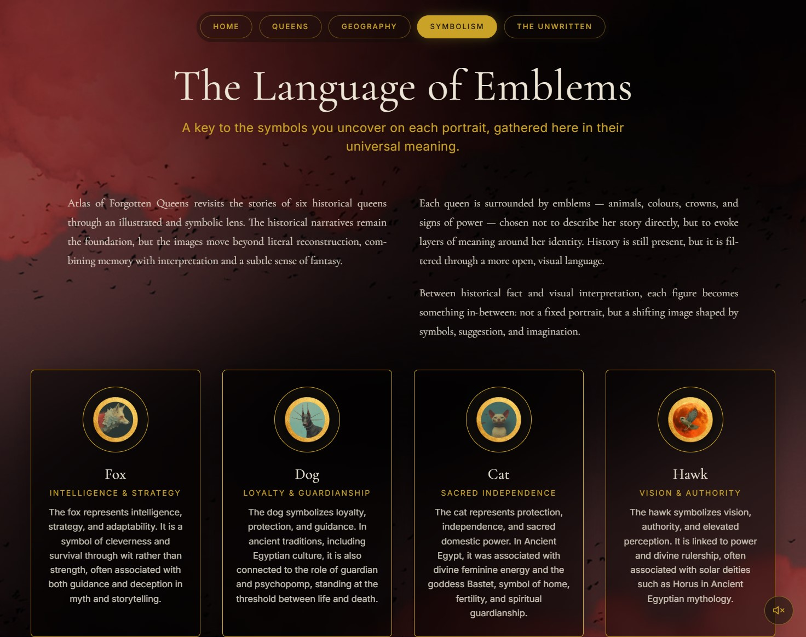
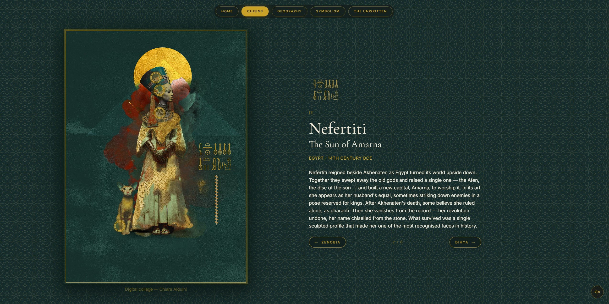

Atlas of
Forgotten Queens
An interactive atlas where history, symbolism and visual storytelling bring forgotten women rulers back into collective memory.

Explore the Live Experience
A fully interactive experience available online.
↗ Explore the Live ExperienceProject Question
How can forgotten women become visible again?
Cultural Memory
Interactive Atlas
The Story
Atlas of Forgotten Queens began with a simple question: why do we remember so few women who shaped the history of entire civilizations?
Rather than creating another historical archive, I wanted to build an experience that encourages curiosity. An atlas where geography, symbolism and storytelling work together to rediscover extraordinary women whose influence has gradually faded from collective memory.
The project transforms historical research into an interactive visual experience, inviting visitors to travel through places, symbols and narratives rather than simply reading biographies.

“Can forgotten queens be remembered?”
History often celebrates empires while overlooking many of the women who helped shape them.
This project is not an attempt to rewrite history, but to expand it—bringing overlooked figures back into public imagination through visual storytelling, allowing memory to become an active process of discovery rather than passive observation.
I chose the format of an atlas because an atlas is more than a collection of maps.
It is a system for organising knowledge.
Maps provide geographical context, helping us understand where stories unfolded and how civilizations were connected across space and time.
Rather than presenting isolated biographies, the atlas creates relationships between places, symbols and historical narratives, allowing visitors to explore history as an interconnected landscape.
Research
The project grew from an extensive personal research process exploring archaeology, ancient civilizations, historical iconography and cultural history.
My investigation focused particularly on North Africa and the Middle East—regions that have long fascinated me as crossroads of civilizations, religions and visual traditions.
Books, archaeological references, historical sources and symbolic studies informed every decision, from the selection of the queens to the construction of each visual world.

Visual Language
Digital collage is not the subject of this project.
It is the language through which research becomes visual experience.
Each composition combines photography, illustration, archival references and AI-assisted elements, carefully assembled to create images that could not exist through a single medium alone.
AI contributed selected visual elements, but every composition was conceived, art directed and assembled manually as part of a broader conceptual process.
Each queen inhabits her own symbolic world.
Animals, colours, garments and objects were carefully selected to communicate multiple layers of meaning.
The recurring presence of animals reflects my personal visual language: they become symbolic companions rather than decorative elements, enriching each portrait with narrative depth.
The palette—deep reds, petrol greens and warm golden tones—reinforces an atmosphere suspended between history, mythology and memory.

Creative Direction
The creative direction was built as an editorial system where research, symbolism and interaction work together. Each visual decision—from palette and typography to portrait composition, maps and navigational cues—helps turn historical knowledge into a world that can be explored rather than simply consumed.
Historical sources, archaeological references, visual archives and symbolic studies were gathered to define the queens, their territories and their contexts.
The research was distilled into connections between people, places, objects and stories, identifying the narrative focus for each queen.
Each queen was developed as a distinct visual world, shaped by a central idea, symbolic companions and an editorial rhythm.
Portraits, maps, timelines, typography, colour and symbols were brought together into a coherent, navigable system.
Visual assets and interaction principles were developed in Figma Make, with collage compositions created and art directed in Photoshop.
The final experience invites visitors to move between historical figures, places and narratives through curiosity rather than a fixed linear path.
Outcome
Originally developed for the Figma Make Config Challenge, the project evolved beyond the competition into an ongoing independent research practice.
The atlas has been designed as an expandable system rather than a finished collection.
New queens, civilizations and visual chapters will continue to be added over time, allowing the project to grow as the research itself evolves.

“Research becomes experience.”Launch Project ↗
Research Continues
The Sovereigns
Atlas of Forgotten Queens grew directly from an earlier series of portraits titled The Sovereigns, where the first visual explorations of these historical women took shape.
The research continues through future atlas projects dedicated to civilizations, cultural memory and historical storytelling.